The function ggstatsplot::ggcoefstats generates dot-and-whisker plots of regression models saved in tidy data frames (produced with the broom package). By default, the plot displays 95% confidence intervals for the regression coefficients. The function currently supports only those classes of object that are supported by the broom package. For an exhaustive list, see- https://broom.tidyverse.org/articles/available-methods.html
In this vignette, we will see examples of how to use this function. We will try to cover as many classes of objects as possible. Unfortunately, there is no single dataset that will be helpful for carrying out all types of regression analyses and, therefore, we will use various datasets to explore data-specific hypotheses using regression models.
Note before: The following demo uses the pipe operator (%>%), so in case you are not familiar with this operator, here is a good explanation: http://r4ds.had.co.nz/pipes.html
General structure of the plots
Although the statistical models displayed in the plot may differ based on the class of models being investigated, there are few aspects of the plot that will be invariant across models:
- The dot-whisker plot contains a dot representing the estimate and their confidence intervals (
95%is the default). The estimate can either be effect sizes (for tests that depend on theFstatistic) or regression coefficients (for tests withtandzstatistic), etc. The function will, by default, display a helpful x-axis label that should clear up what estimates are being displayed. The confidence intervals can sometimes be asymmetric if bootstrapping was used. - The caption will always contain diagnostic information, if available, about models that can be useful for model selection: The smaller the Akaike’s Information Criterion (AIC) and the Bayesian Information Criterion (BIC) values, the “better” the model is. Additionally, the higher the log-likelihood value the “better” is the model fit.
- The output of this function will be a
ggplot2object and, thus, it can be further modified (e.g., change themes, etc.) withggplot2functions.
In the following examples, we will try out a number of regression models and, additionally, we will also see how we can change different aspects of the plot itself.
omnibus ANOVA (aov)
For this analysis, let’s use the movies_long dataset, which provides information about IMDB ratings, budget, length, MPAA ratings (e.g., R-rated, NC-17, PG-13, etc.), and genre for a number of movies. Let’s say our hypothesis is that the IMDB ratings for a movie are predicted by a multiplicative effect of the genre and the MPAA rating it got. To begin with, let’s carry out an omnibus ANOVA to see if this is the case.
# for reproducibility
set.seed(123)
# looking at the data
dplyr::glimpse(x = ggstatsplot::movies_long)
#> Observations: 2,433
#> Variables: 8
#> $ title <fct> Shawshank Redemption, The, Lord of the Rings: The Retur...
#> $ year <int> 1994, 2003, 2001, 2002, 1994, 1993, 1977, 1980, 1968, 2...
#> $ length <int> 142, 251, 208, 223, 168, 195, 125, 129, 158, 135, 93, 1...
#> $ budget <dbl> 25.0, 94.0, 93.0, 94.0, 8.0, 25.0, 11.0, 18.0, 5.0, 3.3...
#> $ rating <dbl> 9.1, 9.0, 8.8, 8.8, 8.8, 8.8, 8.8, 8.8, 8.7, 8.7, 8.7, ...
#> $ votes <int> 149494, 103631, 157608, 114797, 132745, 97667, 134640, ...
#> $ mpaa <fct> R, PG-13, PG-13, PG-13, R, R, PG, PG, PG-13, R, PG, R, ...
#> $ genre <fct> Drama, Action, Action, Action, Drama, Drama, Action, Ac...
# plot
ggstatsplot::ggcoefstats(
x = stats::aov(
formula = rating ~ mpaa * genre,
data = ggstatsplot::movies_long
),
effsize = "omega", # changing the effect size estimate being displayed
point.color = "red", # changing the point color
point.size = 4, # changing the point size
point.shape = 15, # changing the point shape
title = "omnibus ANOVA"
) +
# further modification with the ggplot2 commands
# note the order in which the labels are entered
ggplot2::scale_y_discrete(labels = c("MPAA", "Genre", "Interaction term")) +
ggplot2::labs(x = "effect size estimate (partial omega-squared)",
y = NULL)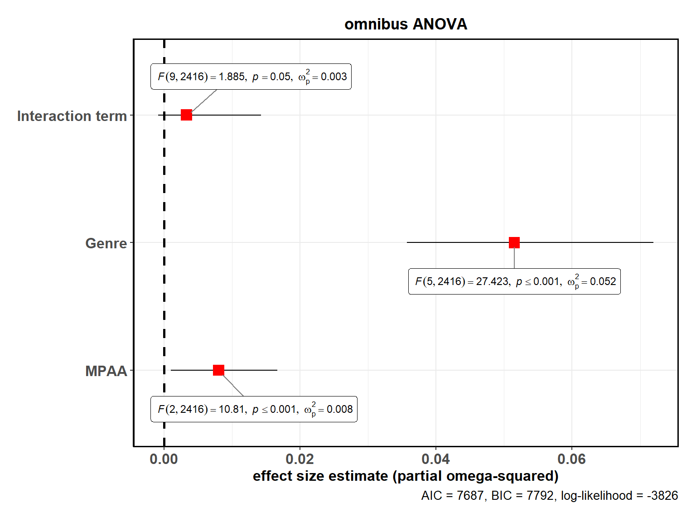
As this plot shows, there is no interaction effect between these two factors.
Note that we can also use this function for model selection. Let’s try out different models and see how the AIC, BIC, and log-likelihood values change.
library(ggstatsplot)
# for reproducibility
set.seed(123)
# plot
ggstatsplot::combine_plots(
# model 1
ggstatsplot::ggcoefstats(
x = stats::aov(formula = rating ~ mpaa,
data = ggstatsplot::movies_long),
title = "1. Only MPAA ratings"
),
ggstatsplot::ggcoefstats(
x = stats::aov(formula = rating ~ genre,
data = ggstatsplot::movies_long),
title = "2. Only genre"
),
ggstatsplot::ggcoefstats(
x = stats::aov(formula = rating ~ mpaa + genre,
data = ggstatsplot::movies_long),
title = "3. Additive effect of MPAA and genre"
),
ggstatsplot::ggcoefstats(
x = stats::aov(formula = rating ~ mpaa * genre,
data = ggstatsplot::movies_long),
title = "4. Multiplicative effect of MPAA and genre"
),
title.text = "Model selection using ggcoefstats",
labels = c("(a)", "(b)", "(c)", "(d)")
)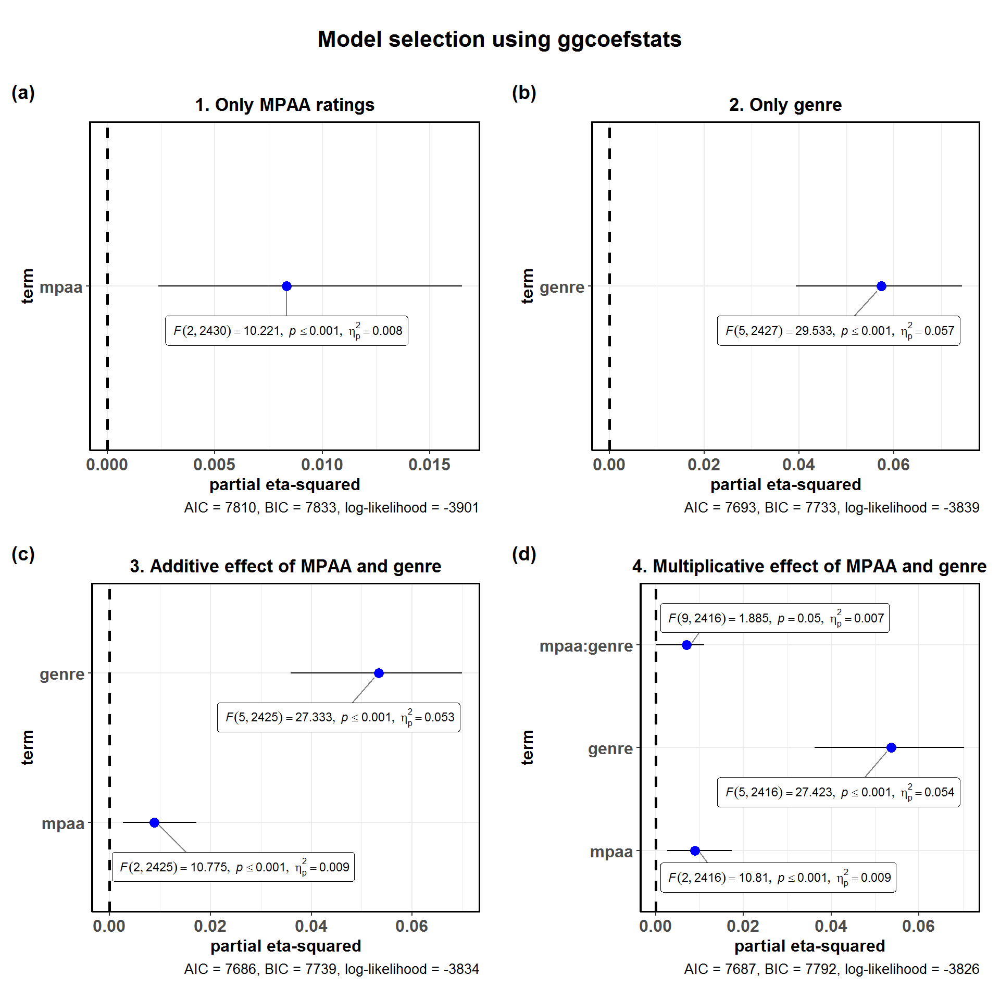
Looking at the model diagnostics, we can see that the model with only genre as the predictor of ratings seems to perform almost equally well as more complicated additive and multiplicative models. Although there is certainly some improvement with additive and multiplicative models, it is by no means convincing enough (e.g., AIC improves by a mere 0.09%) for us to abandon a simpler model. This insight can also be garnered by just looking at the effect sizes, which also tell us that which genre the movie belongs to seems to account for the largest variance.
linear model (lm)
Now that we have figured out that the movie genre best explains a fair deal of variation in how good people rate the movie to be on IMDB. Let’s run a linear regression model to see how different types of genres compare with each other-
# let's check all the levels for the genre variable
levels(ggstatsplot::movies_long$genre)
#> [1] "Action" "Animation" "Comedy" "Documentary" "Drama"
#> [6] "Romance"
# plot
ggstatsplot::ggcoefstats(
x = stats::lm(
formula = rating ~ genre,
data = ggstatsplot::movies_long
),
conf.level = 0.99, # changing the confidence levels for confidence intervals
sort = "ascending", # sorting the terms of the model based on estimate values
label.direction = "both", # direction in which to adjust position of labels (both x and y)
ggtheme = ggplot2::theme_gray(), # changing the default theme
stats.label.color = c("#CC79A7", "darkgreen", "#0072B2", "black", "red"),
title = "Movie ratings by their genre",
subtitle = "Source: www.imdb.com"
) +
# further modification with the ggplot2 commands
# note the order in which the labels are entered
ggplot2::scale_y_discrete(labels = c("Comedy", "Romance", "Documentary", "Animation", "Drama")) +
ggplot2::labs(y = "genre (comparison level: Action)") +
ggplot2::theme(axis.title.y = ggplot2::element_text(size = 14, face = "bold"))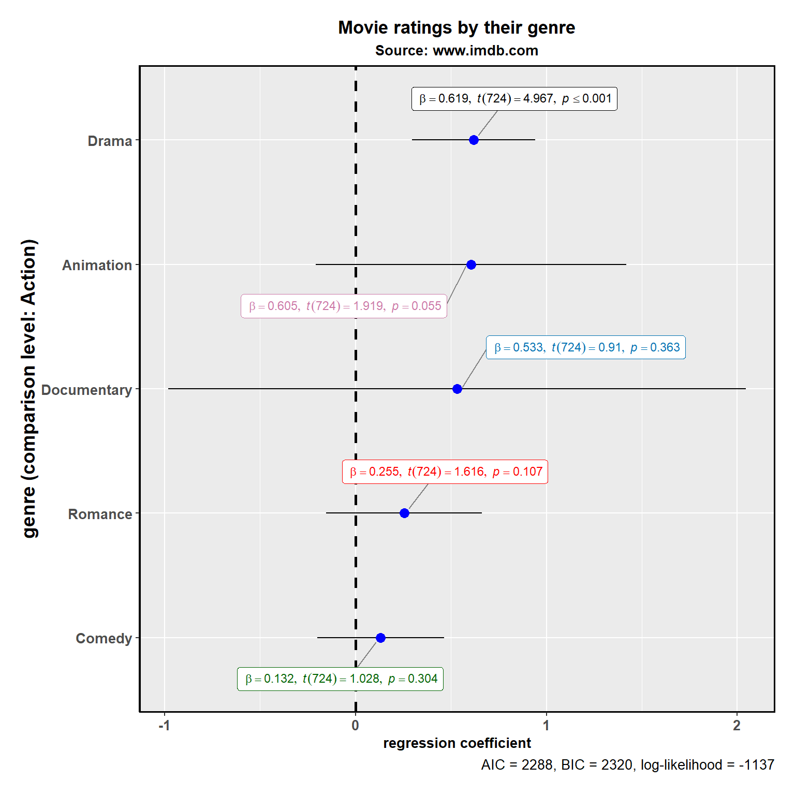
As can be seen from the regression coefficients, compared to the action movies, only romantic movies, animated movies, and dramas fare better with the audiences.
linear mixed-effects model (lmer)
Now let’s say we want to see how movie’s budget relates to how good the movie is rated to be on IMDB (e.g., more money, better ratings?). But we have reasons to believe that the relationship between these two variables might be different for different genres (e.g., budget might be a good predictor of how good the movie is rated to be for animations or actions movies as more money can help with better visual effects and animations, but this may not be true for dramas; also see the ggscatterstats vignette), so we don’t want to use stats::lm. In this case, therefore, we will be running a linear mixed-effects model (using lme4::lmer and p-values generated using the sjstats::p_values function) with a random slope for the genre variable.
library(lme4)
library(ggstatsplot)
# combining the two different plots
ggstatsplot::combine_plots(
# model 1: simple linear model
ggstatsplot::ggcoefstats(
x = stats::lm(
formula = scale(rating) ~ scale(budget),
data = ggstatsplot::movies_long
),
title = "linear model",
exclude.intercept = FALSE # show the intercept
) +
ggplot2::labs(x = parse(text = "'standardized regression coefficient' ~italic(beta)")),
# model 2: linear mixed-effects model
ggstatsplot::ggcoefstats(
x = lme4::lmer(
formula = rating ~ budget + (budget | genre),
data = ggstatsplot::movies_long,
control = lme4::lmerControl(calc.derivs = FALSE)
),
p.kr = TRUE, # use Kenward-Roger approximation to compute p-values (fast)
title = "linear mixed-effects model",
exclude.intercept = FALSE # show the intercept
) +
ggplot2::labs(x = parse(text = "'standardized regression coefficient' ~italic(beta)"),
y = "fixed effects"),
labels = c("(a)", "(b)"),
nrow = 2,
ncol = 1,
title.text = "Relationship between movie budget and its IMDB rating"
)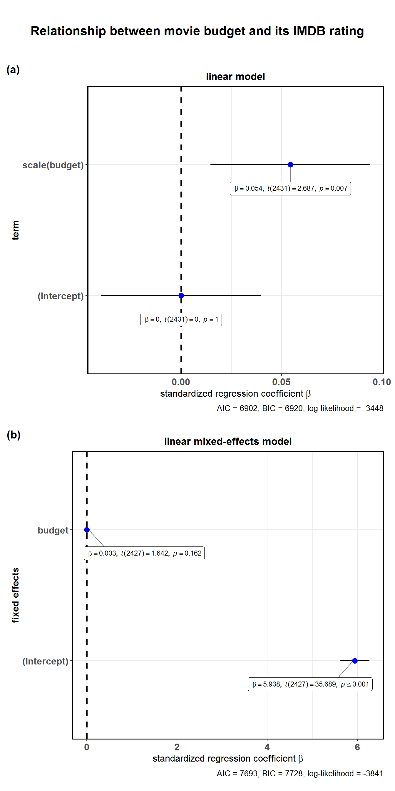
As can be seen from these plots, although there seems to be a really small correlation between budget and rating in a linear model, this effect is not significant once we take into account the hierarchical structure of the data.
Note that for mixed-effects models, only the fixed effects are shown as there are no confidence intervals for random effects terms to show with whiskers in a dot-and-whisker plots. In case, you would like to see these terms, you can enter the same object you entered as x argument to ggcoefstats in broom::tidy:
broom::tidy(
x = lme4::lmer(
formula = rating ~ budget + (budget | genre),
data = ggstatsplot::movies_long,
control = lme4::lmerControl(calc.derivs = FALSE)
),
conf.int = TRUE,
conf.level = 0.95
)
#> # A tibble: 6 x 7
#> term estimate std.error statistic conf.low conf.high group
#> <chr> <dbl> <dbl> <dbl> <dbl> <dbl> <chr>
#> 1 (Intercept) 5.94 0.166 35.7 5.61e+0 6.26 fixed
#> 2 budget 0.00286 0.00174 1.64 -5.53e-4 0.00627 fixed
#> 3 sd_(Intercept).~ 0.377 NA NA NA NA genre
#> 4 sd_budget.genre 0.00336 NA NA NA NA genre
#> 5 cor_(Intercept)~ -0.631 NA NA NA NA genre
#> 6 sd_Observation.~ 1.16 NA NA NA NA Resid~
Non-linear least-squares model (nls)
So far we have been assuming a linear relationship between movie budget and rating. But what if we want to also explore the possibility of a non-linear relationship? In that case, we can run a non-linear least squares regression. Note that you need to choose some non-linear function, which will be based on prior exploratory data analysis (y ~ k/x + c implemented here, but you can try out other non-linear functions, e.g. Y ~ k * exp(-b*c)).
library(ggstatsplot)
# plot
ggstatsplot::ggcoefstats(
x = stats::nls(
formula = rating ~ k / budget + c, # try toying around with the form of non-linear function
data = ggstatsplot::movies_long,
start = list(k = 1, c = 0)
),
title = "Non-linear relationship between budget and rating",
subtitle = "Source: IMDB"
)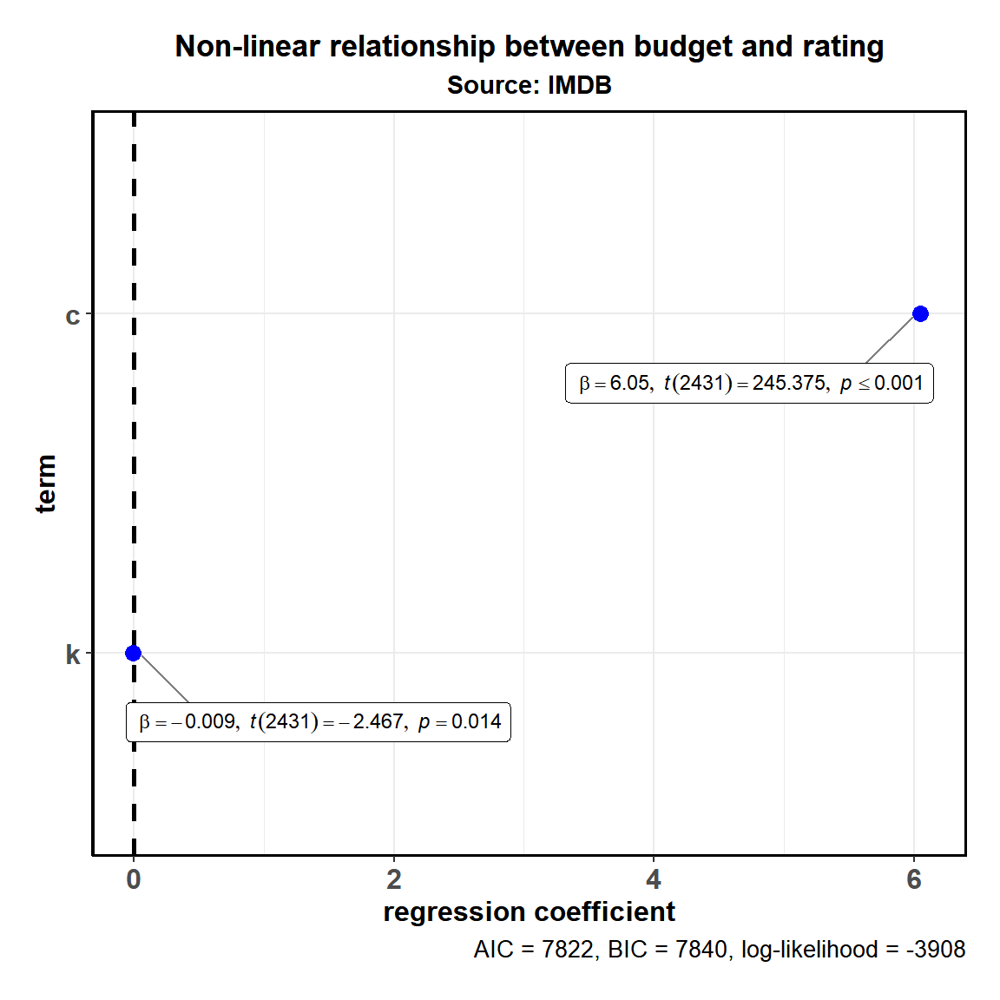
This analysis shows that there is indeed a possible non-linear association between rating and budget (non-linear regression term k is significant), at least with the particular non-linear function we used.
generalized linear model (glm)
In all the analyses carried out thus far, the outcome variable (y in y ~ x) has been continuous. In case the outcome variable is nominal/categorical/factor, we can use the generalized form of linear model that works even if the response is a numeric vector or a factor vector, etc.
To explore this model, we will use the Titanic dataset, which tabulates information on the fate of passengers on the fatal maiden voyage of the ocean liner Titanic, summarized according to economic status (class), sex, age, and survival. Let’s say we want to know what was the strongest predictor of whether someone survived the Titanic disaster-
library(ggstatsplot)
# having a look at the Titanic dataset
df <- as.data.frame(x = Titanic)
str(df)
#> 'data.frame': 32 obs. of 5 variables:
#> $ Class : Factor w/ 4 levels "1st","2nd","3rd",..: 1 2 3 4 1 2 3 4 1 2 ...
#> $ Sex : Factor w/ 2 levels "Male","Female": 1 1 1 1 2 2 2 2 1 1 ...
#> $ Age : Factor w/ 2 levels "Child","Adult": 1 1 1 1 1 1 1 1 2 2 ...
#> $ Survived: Factor w/ 2 levels "No","Yes": 1 1 1 1 1 1 1 1 1 1 ...
#> $ Freq : num 0 0 35 0 0 0 17 0 118 154 ...
# plot
ggstatsplot::ggcoefstats(
x = stats::glm(
formula = Survived ~ Sex + Age,
data = df,
weights = df$Freq, # vector containing weights (no. of observations per row)
family = stats::binomial(link = "logit") # choosing the family
),
exponentiate = TRUE,
ggtheme = ggplot2::theme_dark(),
vline.color = "red",
vline.linetype = "solid",
label.segment.color = "red",
stats.label.size = 3.5,
stats.label.color = c("orangered",
"dodgerblue")
) 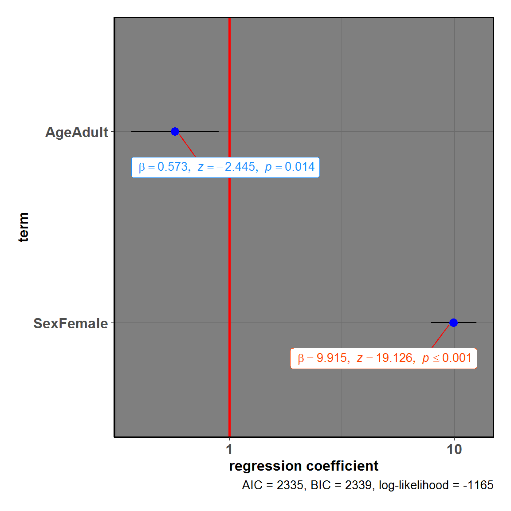
As can be seen from the regression coefficients, all entered predictors were significant predictors of the outcome. More specifically, being a female was associated with higher likelihood of survival (compared to male). On other hand, being an adult was associated with decreased likelihood of survival (compared to child).
Note that the exact statistic will depend on the family used. Below we will see a host of different function calls to glm with a variety of different families. Note that some families have a t statistic associated with them, while others a z statistic. The function will figure this out for you in the background.
# creating dataframes to use for regression analyses
library(dplyr)
# dataframe #1
(
df.counts <-
base::data.frame(
treatment = gl(n = 3, k = 3, length = 9),
outcome = gl(n = 3, k = 1, length = 9),
counts = c(18, 17, 15, 20, 10, 20, 25, 13, 12)
) %>%
tibble::as_data_frame(x = .)
)
#> # A tibble: 9 x 3
#> treatment outcome counts
#> <fct> <fct> <dbl>
#> 1 1 1 18
#> 2 1 2 17
#> 3 1 3 15
#> 4 2 1 20
#> 5 2 2 10
#> 6 2 3 20
#> 7 3 1 25
#> 8 3 2 13
#> 9 3 3 12
# dataframe #2
(df.clotting <- data.frame(
u = c(5, 10, 15, 20, 30, 40, 60, 80, 100),
lot1 = c(118, 58, 42, 35, 27, 25, 21, 19, 18),
lot2 = c(69, 35, 26, 21, 18, 16, 13, 12, 12)
) %>%
tibble::as_data_frame(x = .))
#> # A tibble: 9 x 3
#> u lot1 lot2
#> <dbl> <dbl> <dbl>
#> 1 5 118 69
#> 2 10 58 35
#> 3 15 42 26
#> 4 20 35 21
#> 5 30 27 18
#> 6 40 25 16
#> 7 60 21 13
#> 8 80 19 12
#> 9 100 18 12
# dataframe #3
x1 <- stats::rnorm(100)
y1 <- stats::rpois(n = 100, lambda = exp(1 + x1))
(df.3 <- data.frame(x = x1, y = y1) %>%
tibble::as_data_frame(x = .))
#> # A tibble: 100 x 2
#> x y
#> <dbl> <int>
#> 1 1.56 12
#> 2 0.0705 2
#> 3 0.129 2
#> 4 1.72 11
#> 5 0.461 3
#> 6 -1.27 0
#> 7 -0.687 2
#> 8 -0.446 0
#> 9 1.22 11
#> 10 0.360 3
#> # ... with 90 more rows
# dataframe #4
x2 <- stats::rnorm(100)
y2 <- rbinom(n = 100,
size = 1,
prob = stats::plogis(x2))
(df.4 <- data.frame(x = x2, y = y2) %>%
tibble::as_data_frame(x = .))
#> # A tibble: 100 x 2
#> x y
#> <dbl> <int>
#> 1 1.05 1
#> 2 -1.05 0
#> 3 -1.26 0
#> 4 3.24 1
#> 5 -0.417 0
#> 6 0.298 0
#> 7 0.637 0
#> 8 -0.484 0
#> 9 0.517 0
#> 10 0.369 1
#> # ... with 90 more rows
# combining all plots in a single plot
ggstatsplot::combine_plots(
ggstatsplot::ggcoefstats(
x = stats::glm(
formula = counts ~ outcome + treatment,
data = df.counts,
family = stats::poisson(link = "log")
),
title = "Family: Poisson"
),
ggstatsplot::ggcoefstats(
x = stats::glm(
formula = lot1 ~ log(u),
data = df.clotting,
family = stats::Gamma(link = "inverse")
),
title = "Family: Gamma"
),
ggstatsplot::ggcoefstats(
x = stats::glm(
formula = y ~ x,
family = quasi(variance = "mu", link = "log"),
data = df.3
),
title = "Family: Quasi"
),
ggstatsplot::ggcoefstats(
x = stats::glm(
formula = y ~ x,
family = stats::quasibinomial(link = "logit"),
data = df.4
),
title = "Family: Quasibinomial"
),
ggstatsplot::ggcoefstats(
x = stats::glm(
formula = y ~ x,
family = stats::quasipoisson(link = "log"),
data = df.4
),
title = "Family: Quasipoisson"
),
ggstatsplot::ggcoefstats(
x = stats::glm(
formula = Sepal.Length ~ Species,
family = stats::gaussian(link = "identity"),
data = iris
),
title = "Family: Gaussian"
),
labels = c("(a)", "(b)", "(c)", "(d)", "(e)", "(f)"),
ncol = 2,
title.text = "Exploring models with different glm families"
)
generalized linear mixed-effects model (glmer)
In the previous example, we saw how being a female and being a child was predictive of surviving the Titanic disaster. But in that analysis, we didn’t take into account one important factor: the passenger class in which people were traveling. Naively, we have reasons to believe that the effects of sex and age might be dependent on the class (maybe rescuing passengers in the first class were given priority?). To take into account this hierarchical structure of the data, we can run generalized linear mixed effects model with a random slope for class.
# plot
ggstatsplot::ggcoefstats(
x = lme4::glmer(
formula = Survived ~ Sex + Age + (Sex + Age | Class),
# select half of the sample to reduce the time of execution
data = dplyr::sample_frac(tbl = ggstatsplot::Titanic_full, size = 0.5),
family = stats::binomial(link = "logit"),
control = lme4::glmerControl(
optimizer = "Nelder_Mead",
calc.derivs = FALSE,
boundary.tol = 1e-7
)
),
exponentiate = TRUE
)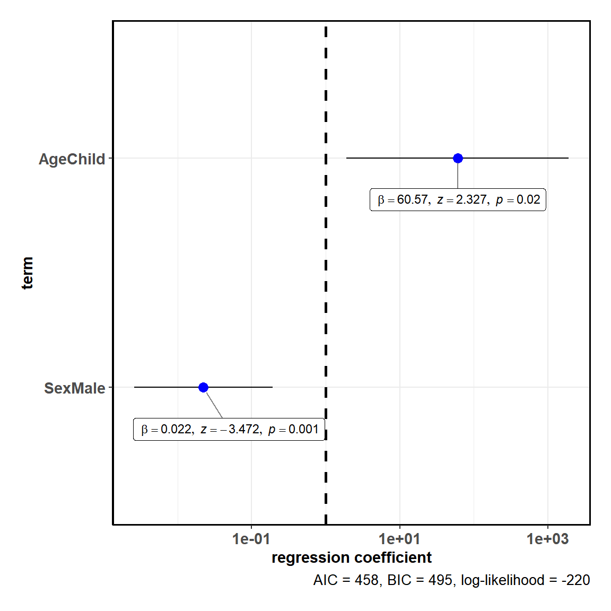
As we had expected, once we take into account the differential relationship that might exist between survival and predictors across different passenger classes, only the sex factor remain a significant predictor (also see the ggspiestats vignette where we had explored this dataset). In other words, being a female was the strongest predictor of whether someone survived the tragedy that befell the Titanic.
Cumulative Link Models (clm)
So far we have dealt either with continuous or nominal/factor responses (or output variables), but sometimes we will encounter ordinal data (e.g., Likert scale measurement in behavioral sciences). In these cases, ordinal regression models are more suitable. To study these models, we will use intent_morality dataset included in the ggstatsplot package. This dataset contains moral judgments (“how wrong was this behavior?”, “how much punishment does the agent deserve?”; on a Likert scale of 1-7) by participants about third-party actors who harmed someone. There are four different conditions formed out of belief (neutral, negative) and outcome (neutral, negative) for four different vignettes, each featuring a different type of harm. The question we are interested in is what explains variation in participants’ rating: information about intentionality, consequences, or their interaction?
We will carry out this analysis for each type of harm because we might expect that people might rely on intent information for some types of harm, but not others (e.g., take into account intent information for minor harms, like bumping into someone, but not for more serious harms, like burning someone’s hand)-
library(ggstatsplot)
library(purrr)
library(glue)
# running the function for each type of harm and creating a list of plots
# to speed up calculations, we will use just half of the dataset
plotlist <- dplyr::sample_frac(tbl = ggstatsplot::intent_morality, size = 0.5) %>%
dplyr::mutate(.data = ., plot.title = harm) %>%
base::split(x = ., f = .$harm) %>%
purrr::map(
.x = .,
.f = ~ ggstatsplot::ggcoefstats(
x = ordinal::clm(
formula = as.factor(rating) ~ belief * outcome,
link = "logit",
data = .,
control = ordinal::clm.control(
maxIter = 50,
convergence = "silent"
),
),
title = glue::glue("Type of harm: {.$plot.title}"),
caption.summary = FALSE # suppress model diagnostics
) +
#ggplot2::scale_y_discrete(labels = c("belief (neutral)", "interaction", "outcome (neutral)")) +
ggplot2::labs(x = "logit regression coefficient",
y = NULL)
)
# combining the plots
ggstatsplot::combine_plots(plotlist = plotlist)
As can be seen from this plot, across all four types of harm, the actors who had malicious intent are judged to be worse than actors who had neutral intent, and actors who cause harm are judged to more harshly than actors who don’t. But how intent and outcome information interact with each other depends on the type of harm.
Cumulative Link Mixed Models (clmm)
In the previous analysis, we carried four separate ordinal regression models to see the generalizability (across items) of effects intent and outcome information on moral judgments. But a better of accounting for such item level differences is to model them as random factors. So, in the current section, we used ordinal mixed-effects regression model to see how belief and outcome contribute towards variation in moral judgment ratings-
library(ggstatsplot)
ggstatsplot::ggcoefstats(
x = ordinal::clmm(
formula = as.factor(rating) ~ belief * outcome + (belief + outcome |
harm),
# to speed up calculations, we will use just half of the dataset
data = dplyr::filter(.data = ggstatsplot::intent_morality, id <= 250),
control = ordinal::clmm.control(
method = "nlminb",
maxIter = 50,
gradTol = 1e-4,
innerCtrl = "noWarn"
)
),
# suppress model diagnostics
caption.summary = FALSE
) +
#ggplot2::scale_y_discrete(labels = c("belief (neutral)", "interaction", "outcome (neutral)")) +
ggplot2::labs(x = "coefficient from ordinal mixed-effects regression",
y = "fixed effects")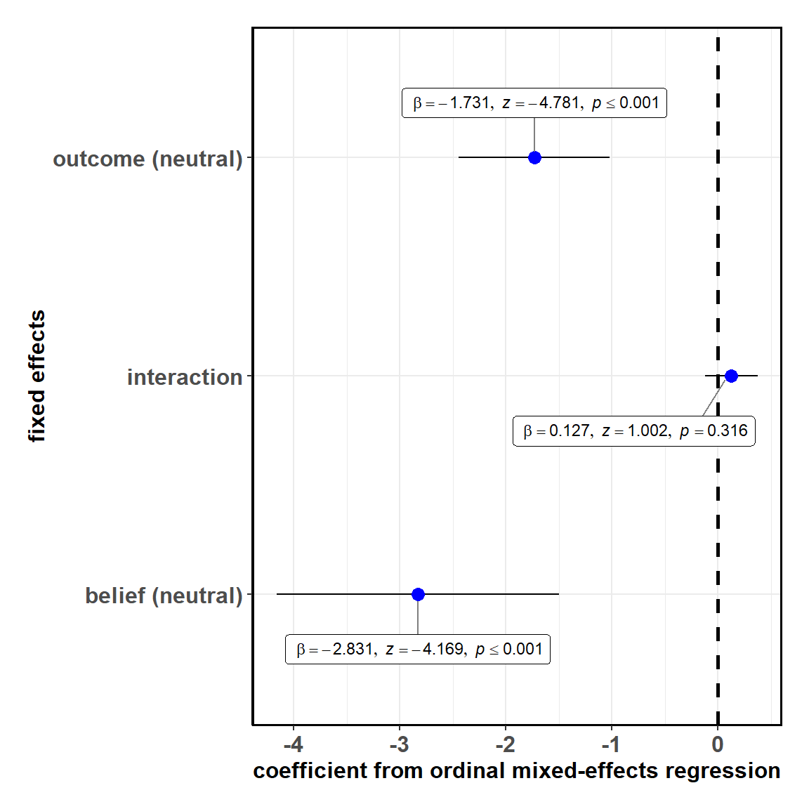
As we had premeditated from the item-level analysis, mixed effects regression didn’t reveal any interaction effect. That is, most of the variance was accounted for by the information about whether there was harmful intent and whether there was harm, at least this is the effect we found with these four types of (minor) harms.
Note that, by default, beta parameters are shown for clm and clmm models, but you can also plot either just alpha or both using ggcoefstats.
library(ggstatsplot)
# to speed up calculations, we will use just half of the dataset
ggstatsplot::ggcoefstats(
x = ordinal::clmm(
formula = as.factor(rating) ~ belief * outcome + (belief + outcome |
harm),
link = "logit",
data = dplyr::sample_frac(tbl = ggstatsplot::intent_morality, size = 0.5),
control = ordinal::clmm.control(
maxIter = 50,
gradTol = 1e-4,
innerCtrl = "noWarn"
)
),
coefficient.type = "alpha"
) +
ggplot2::labs(x = "logit regression coefficients",
y = "threshold parameters")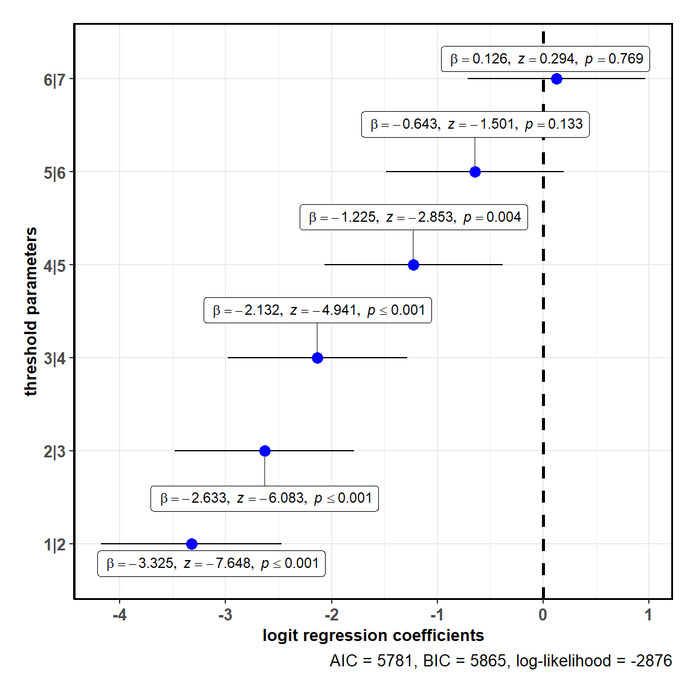
Repeated measures ANOVA (aovlist)
Let’s now consider an example of a repeated measures design where we want to run omnibus ANOVA with a specific error structure. To carry out this analysis, we will first have to convert the iris dataset from wide to long format such that there is one column corresponding to attribute (which part of the calyx of a flower is being measured: sepal or petal?) and one column corresponding to measure used (length or width?). Note that this is within-subjects design since the same flower has both measures for both attributes. The question we are interested in is how much of the variance in measurements is explained by both of these factors and their interaction.
library(ggstatsplot)
library(ggplot2)
# for reproducibility
set.seed(123)
# having a look at iris before converting to long format
dplyr::glimpse(iris)
#> Observations: 150
#> Variables: 5
#> $ Sepal.Length <dbl> 5.1, 4.9, 4.7, 4.6, 5.0, 5.4, 4.6, 5.0, 4.4, 4.9,...
#> $ Sepal.Width <dbl> 3.5, 3.0, 3.2, 3.1, 3.6, 3.9, 3.4, 3.4, 2.9, 3.1,...
#> $ Petal.Length <dbl> 1.4, 1.4, 1.3, 1.5, 1.4, 1.7, 1.4, 1.5, 1.4, 1.5,...
#> $ Petal.Width <dbl> 0.2, 0.2, 0.2, 0.2, 0.2, 0.4, 0.3, 0.2, 0.2, 0.1,...
#> $ Species <fct> setosa, setosa, setosa, setosa, setosa, setosa, s...
# converting the iris dataset to long format
iris_long <- datasets::iris %>%
dplyr::mutate(.data = ., id = dplyr::row_number(x = Species)) %>%
tidyr::gather(
data = .,
key = "condition",
value = "value",
Sepal.Length:Petal.Width,
convert = TRUE,
factor_key = TRUE
) %>%
tidyr::separate(
col = "condition",
into = c("attribute", "measure"),
sep = "\\.",
convert = TRUE
) %>%
tibble::as_data_frame(x = .)
# looking at the long format data
dplyr::glimpse(x = iris_long)
#> Observations: 600
#> Variables: 5
#> $ Species <fct> setosa, setosa, setosa, setosa, setosa, setosa, seto...
#> $ id <int> 1, 2, 3, 4, 5, 6, 7, 8, 9, 10, 11, 12, 13, 14, 15, 1...
#> $ attribute <chr> "Sepal", "Sepal", "Sepal", "Sepal", "Sepal", "Sepal"...
#> $ measure <chr> "Length", "Length", "Length", "Length", "Length", "L...
#> $ value <dbl> 5.1, 4.9, 4.7, 4.6, 5.0, 5.4, 4.6, 5.0, 4.4, 4.9, 5....
# specifying the model (note the error structure)
ggstatsplot::ggcoefstats(
x = stats::aov(formula = value ~ attribute * measure + Error(id / (attribute * measure)),
data = iris_long),
effsize = "omega",
ggtheme = ggthemes::theme_fivethirtyeight(),
ggstatsplot.layer = FALSE,
stats.label.color = c("#0072B2", "#D55E00", "darkgreen"),
title = "Variation in measurements for Iris species",
subtitle = "Source: Iris data set (by Fisher or Anderson)"
) +
ggplot2::labs(caption = "Results from 2 by 2 RM ANOVA") +
ggplot2::theme(plot.subtitle = element_text(size = 11, face = "plain"))
#> Note: No model diagnostics information available for the object of class aovlist . Future release might support this.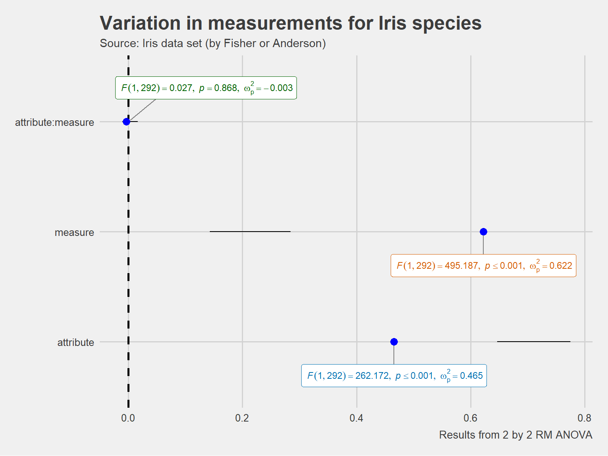
As revealed by this analysis, all effects of this model are significant. But most of the variance is explained by the attribute, with the next important explanatory factor being the measure used. A very little amount of variation in measurement is accounted for by the interaction between these two factors.
Robust regression (lmRob, glmRob)
The robust regression models, as implemented in robust package are also supported. But since no 95% CI are available in this case, only the dots will be shown.
ggstatsplot::combine_plots(
ggstatsplot::ggcoefstats(
x = robust::glmRob(
formula = Survived ~ Sex,
data = ggstatsplot::Titanic_full,
family = stats::binomial(link = "logit")
),
title = "generalized robust linear model"
),
ggstatsplot::ggcoefstats(
x = robust::lmRob(formula = Sepal.Length ~ Sepal.Width * Species, data = iris),
title = "robust linear model"
),
labels = c("(a)", "(b)"),
title.text = "Robust variants of lm and glm",
nrow = 2,
ncol = 1
)
#> Note: No 95% confidence intervals available for regression coefficients from glmRob object, so skipping whiskers in the plot.Note: No 95% confidence intervals available for regression coefficients from lmRob object, so skipping whiskers in the plot.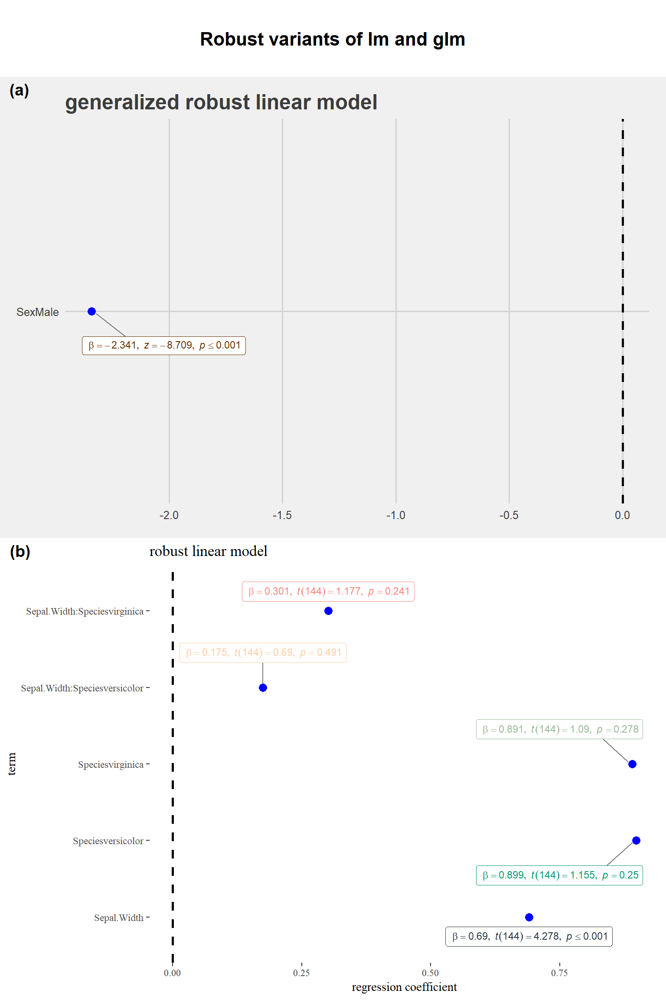
And much more…
This vignette was supposed to give just a taste for only some of the regression models supported by ggcoefstats. The full list of supported models will keep expanding as additional tidiers are added to the broom package: https://broom.tidyverse.org/articles/available-methods.html
Note that not all models supported by broom will be supported by ggcoefstats. In particular, classes of objects for which there is no estimates present (e.g., kmeans) are not supported.
Suggestions
If you find any bugs or have any suggestions/remarks, please file an issue on GitHub: https://github.com/IndrajeetPatil/ggstatsplot/issues